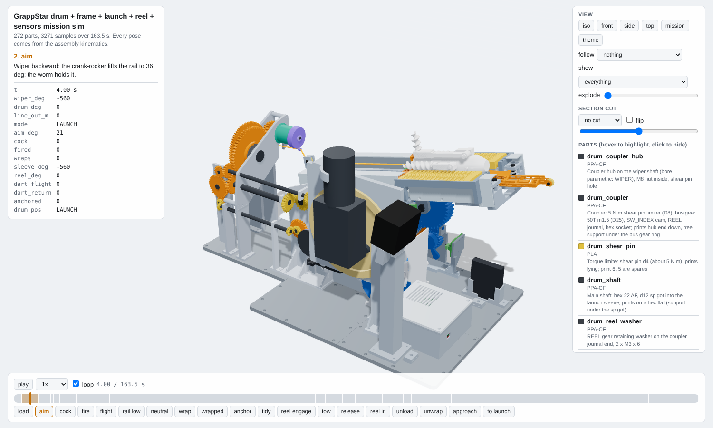
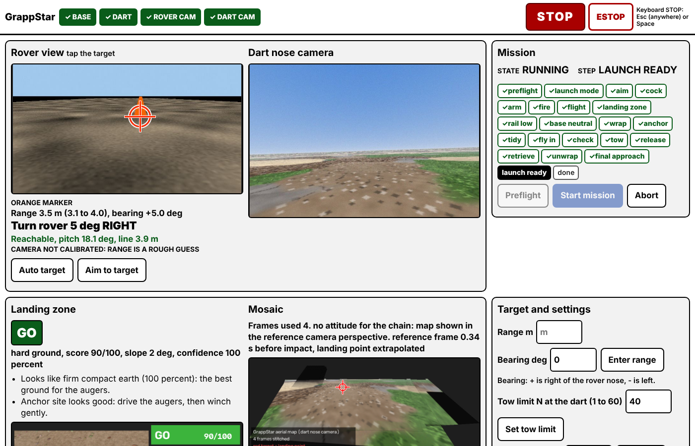

One 12 V wiper motor launches the KEDGE anchor dart, aims it and winches the rover out against it. A small N20 selector drum swaps the motor between the launcher and the capstan reel, in a fixed physical order: LAUNCH, NEUTRAL, WRAP, REEL.

| Item | How | Changes | Reprint |
|---|---|---|---|
| A1 Output shaft diameter | Caliper across the round part of the shaft, 3 places, take the smallest | `WIPER.shaft_d` | Wiper shaft coupler (drum parts) |
| A2 Shaft flats or spline | Flats: caliper across the flats (`shaft_flat`). Spline: count the teeth, caliper the outside and root diameter, photo end-on | `WIPER.shaft_flat` (note a spline in REPORT) | Wiper shaft coupler |
| A3 Shaft end thread and length | Thread a nut you know (M6, M8) onto it. Caliper the shaft length from the housing face to the tip | `WIPER.shaft_thread`, `WIPER.shaft_len` | Wiper shaft coupler |
| A4 Mount hole pattern | Lay the motor face down on paper, press so the holes mark it (or trace with a pencil). Then caliper each hole centre from the shaft centre along two square directions and each hole diameter. Photo of the paper with a ruler | `WIPER.mount_holes` as (x, y, dia) from the shaft axis | `frame_motor_adapter` and `frame_can_stay` |
| A5 Housing size | Caliper the gearbox box (length, width, height) and the motor can (diameter, length), and how far the shaft sits from each edge | `WIPER.body_box` | Frame cheeks and guard if they clash (the audit says) |
| A8 Mounting boss and hub details | Caliper the boss round the output shaft (diameter `boss_d`, height `boss_h`), the hub (`hub_d`, `hub_h`), the threaded length (`thread_len`), where the motor can starts from the shaft (`can_x0`), and the bolt head and nut sizes the motor takes (`bolt_*`, M6 assumed: head 10, nut 10 AF x 5). The motor sits gearbox above the main axis (decision D20, `WIPER.orient_deg` 90): check the can clears the frame in that position | `WIPER.boss_d`, `boss_h`, `hub_d`, `hub_h`, `thread_len`, `can_x0`, `bolt_*` | `frame_motor_adapter`, `frame_can_stay` |
| B1 Free length L0 | Steel rule or tape, hook to hook (inside of the hooks), no load (the spring is longer than a caliper) | `SPRING.free_len` | Nothing |
| B2 Rate k and initial tension F0 | Use water bottles in a shopping bag, weighed on the kitchen scale: about 1, 2 and 3 kg (W1, W2, W3 in kg). Hang each from ONE spring and measure hook to hook (L1, L2, L3). Plot or compute: k (N/mm) = (W3 - W1) x 9.81 / (L3 - L1). F0 (N) = W1 x 9.81 - k x (L1 - L0). The three points should lie on a line; if L1 equals L0 (the spring did not move), drop W1 and add a 3.5 kg load (never more: 4 kg is over the 38.4 N rating), but only if L3 - L0 is under 160 mm. Do both springs. Never stretch a spring longer than L0 + 250 mm. Or let the computer fit it: `python3 base/physics/calib.py spring L0 W1:L1 W2:L2 W3:L3` (kg:mm pairs) prints the rate, the initial tension and the force at full cock. Enter the mean of the two springs in params; the stronger spring decides B4 | `SPRING.k_n_per_mm`, `SPRING.F0_n` (mean of the two springs) | Nothing unless the stroke changes (physics says); re-run physics and the ballistics table |
| B3 Wire and outside diameter | Caliper | `SPRING.wire`, `SPRING.od` | Spring anchors only if OD differs by more than 0.5 mm |
| B4 Which preload hole | Decision D30: the springs are Century C-243, rated 38.4 N maximum safe load. Full cock is 265 mm extension (about 40 N each with the estimated rate; preload 23.8 mm, stroke 240.9 mm). A fallback anchor hole set F, 8.5 mm rearward, gives 256.5 mm at full cock. After B2, `calib.py spring` prints each spring's force at full cock: if the STRONGER spring is over 38.4 N, use the fallback hole set (the springs pull side by side, so each hook carries its own spring's force) | assembly choice (spring anchor holes) | Nothing |
| H1 Drum N20 output shaft | Caliper the diameter (3 mm assumed) and the D flat depth | drum N20 pinion (drum_NOTES) | `drum` N20 pinion |
| H2 Drum N20 stall torque at 9 V | 50 mm lever on the shaft, pressing on the kitchen scale; jog the drum for at most 1 s. Torque N m = kg x 9.81 x 0.05. It must stall at 0.171 N m or more at 9 V (the drum design's margin; estimate 0.22 N m). Laying the wraps is the hardest job for it, so a weak N20 shows up there first | drum gear ratio if it is much weaker (tell the coordinator) | `drum_drum`, `drum_n20_cradle` if the ratio changes |
| H3 CSK20PP keyway depths | Caliper the inner keyway (2.8 assumed) and outer keyway (1.5 assumed) depths | capstan tube key rib, capstan block rib (reel_NOTES) | capstan tube and block |
| H4 BTS7960 module | Height of the heatsink under the board (22 assumed) and the 4 mounting hole spacing (40 x 40 assumed) | `frame_ebay` standoffs | electronics bay |
| H5 DevKitC USB socket | Micro-USB (official board) or USB-C (clone). The slot fits both: just confirm, and have the right cable | nothing | nothing |
| Item | How | If not |
|---|---|---|
| C1 608 bearings (buy 10) | Look in the parts box. Needed for: the CAD uses 4 (aim crank 2, storage reel 2); the coupons borrow some (fit coupon tile A 3, risk coupon 1) and give them back | If not: the only purchase: search "608ZZ bearing 8x22x7" |
| C2 One M8 x 25 bolt and nut (the CAD's bought list), and any M8 bolts or 8 mm steel rod | Look in the parts box. Needed for: an axle through 608s; rod is optional elsewhere | If not: printed PPA-CF axles (tell the coordinator, it is a params switch) |
| C3 Worm N20 count: you need 4 (dart kick, deploy, foot, and the base selector drum) | Look in the parts box. Needed for: dart and base | If not: The kedge notes said 2 in hand and one to buy; the August order listed 8 worm N20s. Count them |
| C4 MP1584 #2 (the spare from the dart build; confirm it, decision D19) | Look in the parts box. Needed for: drum N20 supply at 9.0 V | If not: No other way to run the DRV8833 from the 3S: tell the coordinator |
| C5 DRV8833 #3 (freed from the dart by the new pin map) | Look in the parts box. Needed for: drum N20 | |
| C6 100 kg load cell + HX711 (August order) | Look in the parts box. Needed for: optional line tension reading | If not: Leave it out: the firmware uses wiper current instead |
| C7 Resistors: 2 x 10 k, 1 x 1 k, 1 x 680 R, 1 x 100 k, 1 x 22 k | Look in the parts box. Needed for: BTS7960 enable pull-downs, IS divider, battery divider (firmware/base/WIRING.md) | If not: Any value within 20 percent works for the pull-downs; tell fw-base if the dividers differ. Without the battery divider at all, send `{"cmd":"set","key":"vbat_wired","val":false}` after every start-up (it comes back true at boot, and the base then refuses with NO_POWER) |
| C8 Spare XT60 plugs, 14 AWG wire, two small inline fuse holders with a 2 A and a 1 A fuse | Look in the parts box. Needed for: XT60 Y harness; fuses for the MP1584 and RC832 taps | If not: Without the small fuses: use 18 AWG for those taps and keep them under 10 cm |
| C9 Barrel plug 5.5 x 2.5 mm with lead | Look in the parts box. Needed for: Jetson from the LiPo | If not: Run the Jetson from its own supply on the bench; the rover needs one |
| C10 Yellow RCA lead | Look in the parts box. Needed for: RC832 AV out to the DIGITNOW | |
| C11 USB data cable for the DevKitC, STEMMA QT to Dupont cable | Look in the parts box. Needed for: base ESP32, AS5600 | |
| C12 M3 screws (lengths from the base print list), M3 nuts, M3 heat-set inserts | Look in the parts box. Needed for: printed contacts, frame joints | |
| C13 AS5600 magnet (recommended): any small neodymium disc (6 to 10 mm, 2 to 3 mm thick, mounted edge-on) or a 6 x 2.5 mm diametric disc. The Adafruit board does not include one | Look in the parts box. Needed for: main shaft angle | If not: the firmware has a no-magnet mode (decision D12): print the 6-bump index cam, fit the SW_INDEX contact on GPIO35, switch SW_INDEX on in firmware/base config.h (WIRING.md section 1) and re-flash. It is less precise; a magnet is better |
| C14 Launch springs: two only (decision D38) | Nothing to buy. The CAD keeps holes for a second pair, but the drive train is not rated for it (about 5.8 N m per cock, above the 5 N m shear pin and the 6.5 A trip): do not fit four | none |
| C15 8 mm steel rod (or M8 bolts) for: reel shaft S, aim worm wheel axle, storage reel axle, the two spring anchor pins (double shear in post and strap); the carriage yoke pegs take 8 mm rod too (printed PPA-CF pegs are the default) | Look in the parts box. Needed for: reel and aim | If not: Printed PPA-CF shafts (the reel worker's fallback); tell the coordinator |
| C16 Hardware the CAD assumes: M3 x 4 x 5 heat-set inserts; M3 screws x 6, 8, 10, 12 mm (frame) and M3 x 25 cap screws + nylocs (rover mount); M6 bolts and nuts for the wiper (head 10, nut 10 AF); one M8 nut (drum coupler); cable ties, a hose clamp, glue (magnet). Printed, nothing to find: the reel cup C-clips (the v7 clip design), the aim drag pad and idler clips, the yoke pegs | Look in the parts box. Needed for: frame, drum, launch, reel | If not: Exact counts in the base print pack / assembly steps |
| C17 JST SH 4-pin (STEMMA QT) cable 400 mm or longer for the AS5600 | Look in the parts box. Needed for: the 200 mm one is too short | If not: Extend with 4 soldered wires and heat shrink |
| C18 Carriage stop | Nothing to find: it is a printed PLA flexure with about 19 mm travel (decision D26). TPU pads are an optional upgrade if you get TPU | none |
| C19 No PETG needed: the brake rocker prints in PPA-CF with an adjustable FIRM screw | Nothing to find | none |
| C20 How many 693ZZ / F693ZZ bearings are left after the dart (the dart uses 5 F693ZZ). The base needs 2 x 693ZZ (the lip roller and the one rail-rear pulley, D50); the coupons borrow one 693ZZ and one F693ZZ and give them back | Look in the parts box. Needed for: line pulleys and the lip roller on the base | If fewer than 6 x 693ZZ: Tell the coordinator the count |
| C21 Coupon extras, exactly as the coupon sheets list them (base/pack/coupons/COUPON_TEST.md and base/pack/fit_coupon/COUPON.md): today M3 screws x 10, 12, 16 and 20, M3 nuts and a jam nut, M3 heat-set inserts, string, and 2 x M3 x 16 for the swing splitter coupon (its drag pad and idler clip are printed, no O-ring or e-clip) | Look in the parts box. Needed for: the day-one coupons | If not: ask before buying (the only planned purchase is 608s) |
| C22 Perfboard about 55 x 31 mm (optional) | Look in the parts box. Needed for: nothing essential. The bay has two bosses for one (2 x M3 x 10) to carry the dividers, the pull-downs and the 3V3 and GND buses, but firmware/base/WIRING.md solders the resistors at the boards and shares one GND wire | If not: leave the two bosses empty |
Bench and field numbers (current sense, tension per amp, payout brake, range shots) come later, in the order of the test plan: see the full measure list.
| Range (2 springs, 0.25 N payout brake) | 4.8 m |
| Muzzle speed | 6.9 m/s |
| Spring energy stored | 12.1 J |
| Springs | 2 x Century C-243 (5/8 x 6-1/2 in x 0.054 in wire) |
| Pitch range | 6.0 to 47.0 deg |
| Capstan wraps | 7 |
| Tow limit (firmware default) | 50.0 N |
| Dart | KEDGE v30, 279 g with ballast |
| Bed | 256 x 256 x 260 mm (Bambu X2D) |
Never fire without the tether attached: at these speeds the tether keeps the dart nose first.

python3 -m grappstar serve --sim on any PC runs the whole mission against the simulated base, dart and cameras: rover view with the target and ballistic solution, the 22 mission steps, the landing-zone verdict and the aerial map stitched from the dart video.
| Suite | Result | Detail |
|---|---|---|
| Run scripts/check_all.sh and pass --checks. | ||